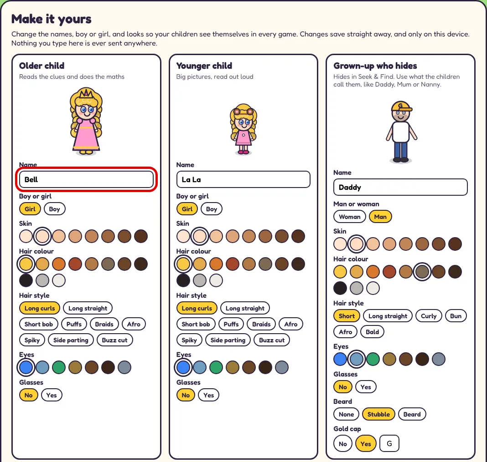
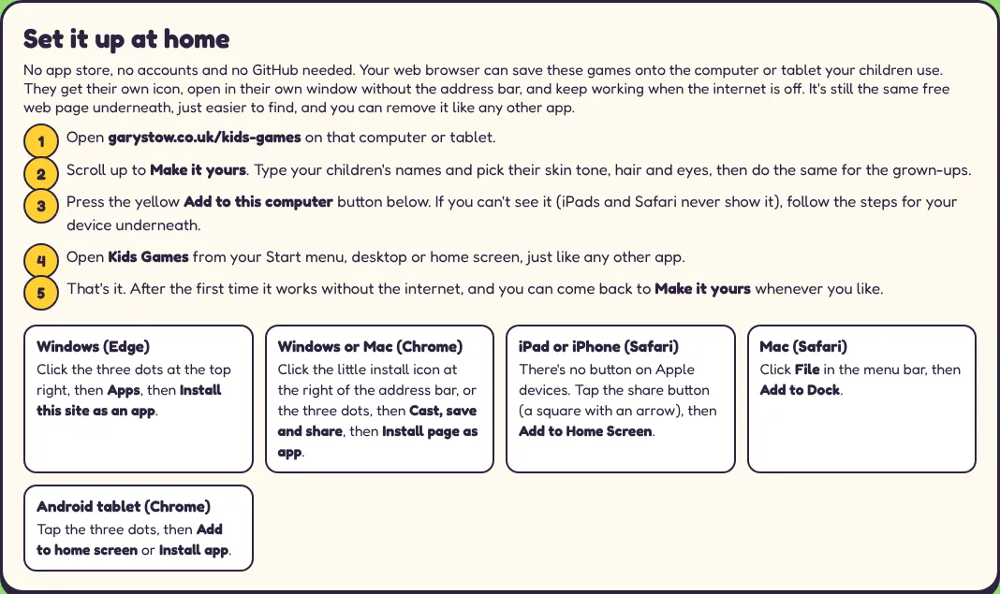
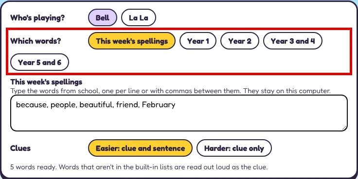
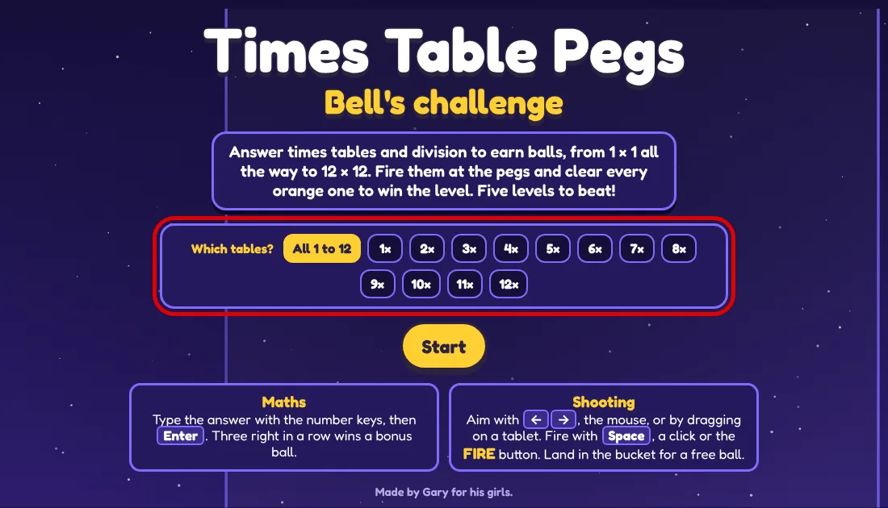
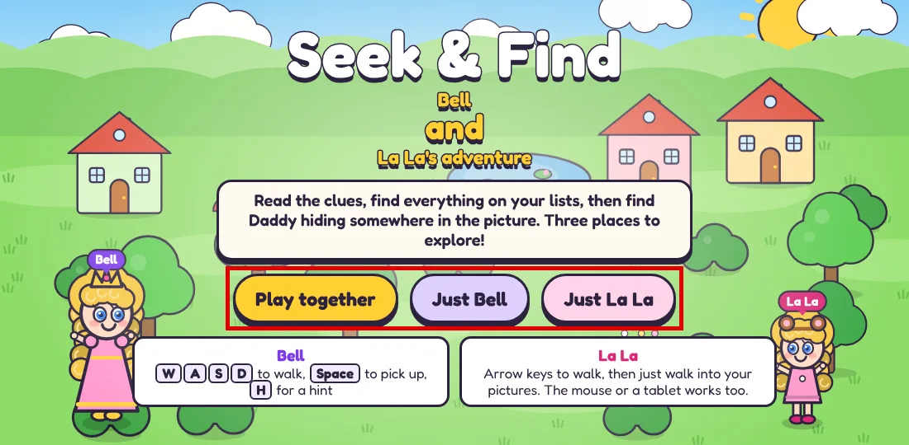

Kids Games are four free learning games that run in a web browser: times tables, spellings, colours and counting, and a find-it game that a younger and an older child play together. They suit children from about three to eleven, there are no adverts, no accounts and nothing to buy, and you can set them up at home in about ten minutes with no technical knowledge at all.
This guide walks you through it step by step, from opening the games for the first time to making the characters look like your family and adding this week's spellings from school. If you'd like to know why I built them for my daughters, I wrote about that in why I built free learning games my daughters can play together.
Before you start
You need three things, and none of them cost anything:
- The computer or tablet your child will use. Set the games up on that device, because your family's settings are saved there.
- A web browser, the app you use to visit websites. Safari on an iPad or iPhone, and Microsoft Edge or Google Chrome on a computer or Android tablet.
- About ten minutes, and the internet switched on for the first visit.
You don't need an account, an app store or a payment card, and you won't be asked for an email address at any point.
Step 1: Open Kids Games on the device your child will use
- Open your web browser on your child's computer or tablet.
- Type garystow.co.uk/kids-games into the address bar at the top and press Enter (or Go on a tablet).
- You'll see the four games: Seek & Find, Times Table Pegs, Paint Splash and Spell & Build. Don't start one yet.
Step 2: Make it yours
The games come with two children called Bell and La La, plus Daddy and Mummy. You can change all four so your children see themselves in every game.
- On the Kids Games page, scroll down to the box called Make it yours.
- In Older child, type your older child's name in the Name box (marked in red below). Then choose Girl or Boy, and pick their skin, hair colour, hair style, eyes and glasses. The picture changes as you go.
- Do the same in Younger child. If you only have one child, give both the same name, or let a sibling, cousin or friend be the second player.
- Next, set up the two grown-ups. Grown-up who hides is the one the children hunt for at the end of Seek & Find, so use whatever they call you, like Daddy, Mum or Nanny. Grown-up who cheers celebrates at the end of an adventure. Grown-ups can have a beard and a gold cap too.
- Further up the page, Dress up lets each child choose an outfit. Every outfit is available to every child, so nobody misses out.

Your choices save straight away, only in that browser on that device. Nothing you type is sent to me or anyone else. If you ever want to start again, press Back to Bell and La La at the bottom of the box, then press it a second time to confirm.
Step 3: Add it to the device
This step is optional, but it makes the games much easier for children to find. Your browser can save Kids Games onto the computer or tablet with its own icon, so it opens in its own window like an app, without the address bar, and keeps working when the internet is off. It isn't an app store install. It's the same free web page underneath, and you can remove it like any other app.

iPad or iPhone (Safari)
- Open garystow.co.uk/kids-games in Safari. It has to be Safari for this to work.
- Tap the share button, the square with an arrow pointing up. On an iPad it's at the top right, and on an iPhone it's at the bottom of the screen.
- Scroll down the list and tap Add to Home Screen.
- Tap Add at the top right. A Kids Games icon appears on your home screen.
There's no yellow install button on Apple devices, which is why it's done through the share menu. To remove it later, press and hold the icon until a menu appears, then choose the option to remove it.
Windows or Mac computer
On a computer using Edge or Chrome, the easiest way is the yellow Add to this computer button in the Set it up at home box. Press it, then press Install when your browser asks. If the button doesn't appear, use the steps for your browser:
- Microsoft Edge (Windows): click the three dots at the top right, then Apps, then Install this site as an app.
- Google Chrome (Windows or Mac): click the little install icon at the right of the address bar, or the three dots, then Cast, save and share, then Install page as app.
- Safari (Mac): click File in the menu bar at the top of the screen, then Add to Dock.
Kids Games then appears in your Start menu on Windows, or your Dock on a Mac. To remove it on Windows, right-click it in the Start menu and choose Uninstall.
Android tablet (Chrome)
- Open garystow.co.uk/kids-games in Chrome.
- Tap the three dots at the top right.
- Tap Add to home screen or Install app, whichever you see, then confirm.
Step 4: Add this week's spellings in Spell & Build
If your child brings home spellings each week, you can put them straight into the game.
- Open Spell & Build.
- Next to Who's playing?, choose your child.
- Next to Which words?, choose This week's spellings (marked in red below).
- Type the words from school into the box, one per line or with commas between them. They stay on that device.
- Under Clues, pick Easier: clue and sentence or Harder: clue only. You can set this differently for each child.
- Press Guess & spell to play.

Words that are already in the game come with a clue and a sentence. Any word that isn't in the built-in lists is read out loud as the clue instead, so it still works with whatever school sends home.
To practise for a test, press Spelling test: 15 words or Spelling test: 20 words. The game reads each word aloud in a sentence, your child types it, and the results come at the end, just like school. Prefer the full school lists? Under Which words? choose a year group instead, or print the spelling lists for each year group.
Step 5: Choose the times tables to practise in Times Table Pegs
- Open Times Table Pegs.
- Next to Which tables? (marked in red below), leave All 1 to 12 chosen, or tap the tables your child is working on at school, such as 3×, 4× and 8×.
- Press Start, and your child types each answer with the number keys and presses Enter. Every right answer earns a ball to fire at the pegs. Three right in a row wins a bonus ball.

The game covers every times table from 1 × 1 to 12 × 12 plus the matching division. The trickier facts turn up more often as the levels go on, and anything your child gets wrong comes back a little later.
Playing together
Seek & Find is the game built for two. Press Play together, or choose one child to play on their own. The buttons show your own children's names once you've done Step 2.

On one keyboard, the older child walks with W, A, S and D, picks things up with the Space bar and presses H for a hint. The younger child walks with the arrow keys and simply walks into the pictures. A mouse works too, and Seek & Find and Paint Splash also work with two game controllers plugged into a computer.
As a rough guide to ages:
- Seek & Find: about 3 to 10, best played together.
- Paint Splash: about 2 to 5, and older brothers and sisters can join in.
- Times Table Pegs: about 7 to 11.
- Spell & Build: about 5 to 11, starting with the Year 1 words.
Tips for tablets
- Turn the tablet sideways for a bigger picture. The games will remind you if it's upright.
- In Times Table Pegs, drag a finger to aim and tap the FIRE button, or hold the arrow buttons to aim.
- Press Full screen at the bottom right to hide everything else on the screen.
- On a phone the games work, but everything is small. A tablet or computer is much easier for little hands and tired eyes.
Troubleshooting
The pictures are blank, or I'm seeing an old version. Close the Kids Games tab or app, open it again, then refresh the page twice. On older iPads this fixes it almost every time.
My names and settings have disappeared. They belong to that browser on that device, so they won't follow you to another tablet or another browser. Clearing your browser's website data or history also removes them. Set them up again in Step 2 and they'll stay.
There's no sound in the games. Check the Sound on button at the bottom right of each game, then the volume. On an iPad, check it isn't on silent.
I can't see the yellow Add to this computer button. iPads, iPhones and Safari never show it. Use the steps for your device in Step 3 instead.
It doesn't work without the internet. Open Kids Games once with the internet on, and open each game you want to use offline at least once.
Going further
All of the code is free on GitHub, and you don't need to be a coder to use your own copy:
- On the GitHub page, click the green Code button, then Download ZIP.
- Open your Downloads folder, right-click the ZIP, choose Extract All, then Extract.
- Open the new folder and double-click index.html. The games open in your web browser.
From there you can change more than names and looks. The GitHub page explains how to ask an AI assistant, in plain English, to add a new outfit or your own spelling words.
For teachers and clubs
If you'd like to share the games with your class, your club or your school's families, there's a printable one-page summary for teachers with what each game teaches, the age ranges and the privacy facts. If you've got an idea for a game around your own topic, get in touch. Depending on how complex it is, I may be able to build it for free.
Free to reuse
Teacher, school newsletter, PTA or parenting group? You're welcome to copy this guide into your own materials, website or newsletter, as long as it isn't for commercial use and you credit me with a link back to this page. Paste this credit line wherever you use it:
Adapted from "How to Set Up Free Learning Games for Your Kids" by Gary Stow (https://garystow.co.uk/guides/how-to-set-up-free-learning-games-for-your-kids/), licensed under CC BY-NC 4.0.This guide is licensed under Creative Commons Attribution-NonCommercial 4.0 (CC BY-NC 4.0). Got an idea for another game, or want to use this commercially? Get in touch.
Where to go next
Read why I built free learning games my daughters can play together, or go straight to Kids Games and start playing. If you're curious how a dad with no coding background built them, start with how to learn AI with no coding background.